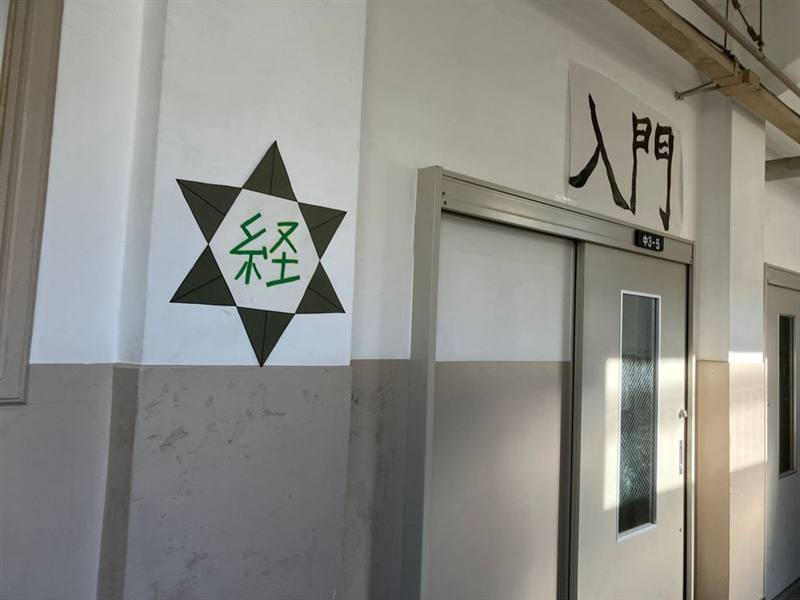

4 つの場面で、麻経を。
教室の入口から、黒板、手づくりの飾り、そして Web へ。下へ進むと、写真が入れかわります。



-
「入門」をくぐると、
経済の町。2,364人2026 年の文化祭、3 日間の来場者
入口には「入門」の札と、経の字の六芒星。中は、チップを賭けて 6 つのコーナーで遊ぶ体験型展示「麻布経済展」です。
文化祭のページへ -
黒板に、
「本日の億万長者」。120枚会場の最高記録（黒板には 24 倍と）
増やしたチップの枚数で、その日の上位が黒板に書かれました。Web の億万長者クイズでも、同じように挑戦できます。
クイズで挑戦する -
飾りも、パネルも、
手づくり。6コーナークイズ・カードゲーム・クロスワードほか
廊下の「麻経」の大波から、ルールのポスター、診断のパネルまで。部員が準備して、教室ひとつを会場にしました。
活動のようすを見る -
展示は、
Web でも続く。300語用語辞典の言葉。経済ラボの実験は 16
エコノミスト診断・クイズに、Web 用に作ったクロスワードとカード勝負。登録なし、無料で、スマホからすぐ遊べます。
遊んでみる